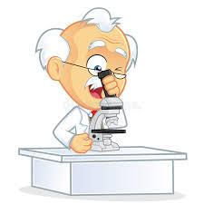
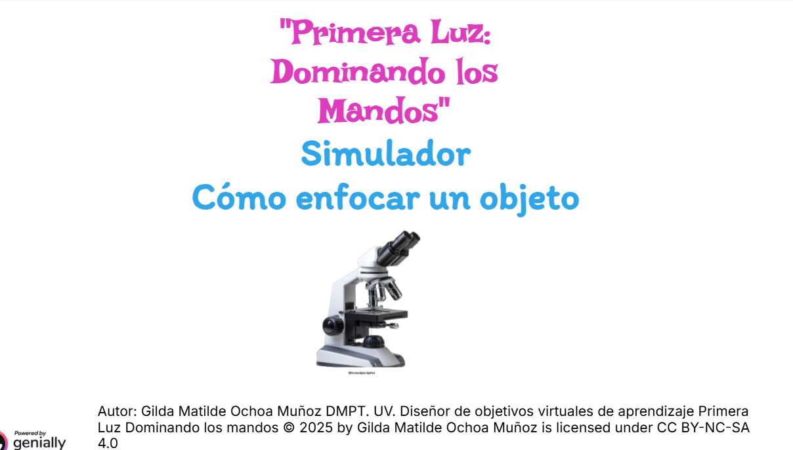

1. ¿Qué es un microscopio?

El término microscopio viene del griego micro (pequeño) y scopio (ver, observar). El microscopio es una herramienta utilizada por la mayor parte de los biólogos. La razón es obvia: las células son las unidades básicas de la vida y su medida se encuentra, con algunas excepciones, fuera del límite de resolución del ojo humano (0,25 mm). Por ello es necesario utilizar instrumentos como el microscopio, que permiten visualizarlas. La función del microscopio es triple: 1) producir una imagen aumentada de la muestra, 2) separar los detalles en la imagen y 3) hacer posible que estos detalles sean visibles. El microscopio incluye un grupo de instrumentos que comprende no sólo los microscopios formados por múltiples lentes (microscopios compuestos) sino también instrumentos muy sencillos como la lupa. Una lupa típica consta de una sola lente biconvexa que produce una ampliación entre 1,5 y 30 veces, y tiene la ventaja de que permite la visión estereoscópica (en relieve) y la manipulación de la muestra durante la observación. Para conseguir un mayor aumento de la imagen se utiliza el microscopio óptico compuesto, denominado así porque está formado por dos sistemas de lentes, el ocular y el objetivo.
MICROSCOPÍA
Les presento el siguiente documento de Cesar Montalvo Arenas Titulado Microscopía donde encontrarán un manual educativo sobre microscopía óptica, enfocado en el microscopio óptico compuesto.
Este manual incluye información sobre:
La historia de la microscopía y su evolución hasta los microscopios compuestos actuales.
Los componentes del microscopio, divididos en sistemas mecánico, óptico e iluminador.
Los principios de funcionamiento, aumentos, resolución y preparación de muestras.
Las principales técnicas de observación, como campo claro, campo oscuro, contraste de fases, fluorescencia y microscopía confocal.
Recomendaciones de mantenimiento y ejemplos de aplicaciones en biología y medicina.
Este manual es muy útil para estudiantes y profesionales que quieran comprender y aplicar correctamente la microscopía óptica en el estudio de células, tejidos y microorganismos.
https://bct.facmed.unam.mx/wp-content/uploads/2018/08/2_microscopia.pdf
Primera Luz. Dominando los mandos
Instrucciones
Observa el simulador que aparece a continuación.
Utiliza las piezas que se te indican, arrastrándolas a su posición correspondiente.
Sigue las indicaciones del simulador paso a paso hasta lograr el enfoque correcto de la muestra.
Si colocas una pieza en el lugar incorrecto, vuelve a intentarlo siguiendo las pistas que aparecen en pantalla.
Completa el procedimiento guiado para comprender el uso adecuado de cada parte del microscopio
Entra a la siguiente liga para realizar tu actividad.
